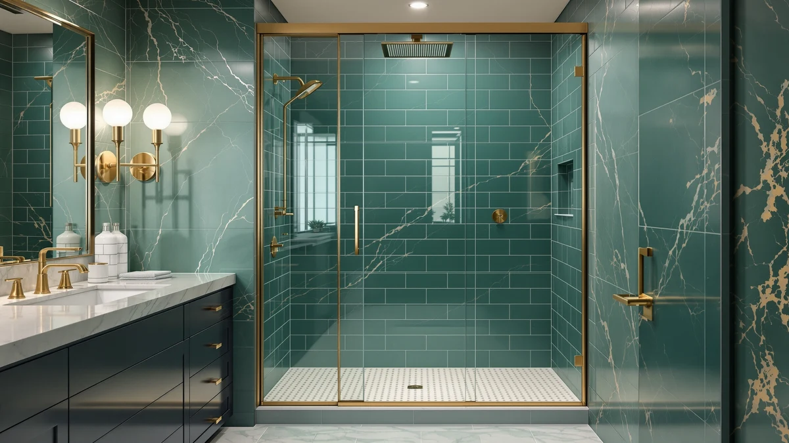

Best Shower Doors for Hard Water (2026)
Prices and picks verified as of August 2026. Independent, reader-supported reviews.


Quick Answer
For most bathrooms, the KPUY Frameless Shower Door 55-60" is the best shower door for hard water: it has no metal track for mineral scale to collect in, so a quick wipe keeps the glass clear. Need a lower price, a narrower opening, or a fixed 60-inch width instead? We cover six more picks below, each compared on price, size, and glass thickness.
Our pick: KPUY Frameless Shower Door 55-60", $499.96 Check Price on Amazon
Bottom line: our top pick is the KPUY Frameless Shower Door at $499.96. The best budget option is the Frameless Shower Door at $273.28.
Things to Know Before You Buy
- Frameless doors give hard-water minerals fewer places to hide. With no metal channel around the glass, there is no track for calcium and lime deposits to build up in. You wipe one flat pane instead of scrubbing a gasket.
- A squeegee habit matters more than the door you buy. Whatever door you choose, thirty seconds with a squeegee after every shower cuts hard-water spotting far more than any coating or glass type.
- Glass thickness is listed on some doors and not others. A few picks on this list state a glass thickness, such as 6mm or 8mm (5/16 inch), while others only publish the outer dimensions. Thicker panels feel more rigid but are heavier to hang.
- Doors fit a width range, not one fixed size, except where noted. Most of these adjust across a span such as 56 to 60 inch; one on this list is a fixed 60-inch panel. Measure your opening before you order.
- The shower base is not included. Every door here is a glass-and-hardware kit. You supply the pan, base or tiled curb underneath it.
The best shower doors for hard water are not the ones with a fancy coating promise on the box. They are the ones that give calcium and lime deposits the fewest places to collect in the first place. If you live somewhere the tap water leaves a white crust on your faucets, that same mineral load lands on your shower glass every single day, and a door with a metal track or a maze of hinges gives it more surface area to cling to.
For most bathrooms, the KPUY Frameless Shower Door 55-60" is our top pick. It skips the metal channel entirely, so there is one flat pane to wipe down instead of a track to scrub, and its 55 to 60 inch adjustable range fits the standard alcove opening in most US homes. If your opening is narrower, your budget is tighter, or you need a fixed width instead of a range, we found a door below that covers each of those cases too.
We compared seven shower doors for hard water on published price, dimensions, and glass thickness, then checked owner feedback for real complaints about spotting, cloudy glass, and hardware that corrodes faster than expected. Below you will find our top pick, five more frameless and standard doors at a range of prices, a full comparison table, and the doors we considered and passed on.
Why You Should Trust Us
Best Shower Doors is run by Ilane Tall, who has spent years covering bathroom fixtures and remodeling for a US audience. We do not run a fake testing lab and we do not invent star ratings. What we do is read the actual spec sheets, cross-check dimensions and glass thickness against the manufacturer's own listing, and dig through verified owner reviews to see what people report after living with a door through months of real water and real cleaning habits. When a door has a genuine weakness, hard-water related or otherwise, we say so. Every Amazon link here is affiliate-tagged, which supports the site at no cost to you and never changes which door we recommend.
How We Picked
We started with shower doors that are actually available and shipping in the US, then filtered on what matters most for hard water specifically. Frameless construction came first, since a door without a metal track leaves fewer surfaces for mineral scale to collect on, and three of our seven picks are explicitly frameless. Next we looked at published glass thickness where the listing states one, since a heavier pane holds up better to years of wiping and cleaning. We prioritized doors with a clear adjustable width range so you are not stuck between two fixed sizes, and we made sure the final list spans a real price range, from a $273.28 narrow door to a $499.96 top pick, so there is an option whether your bathroom is standard or tight on space and budget.
How We Compared
We are transparent about method here: we did not install seven shower doors in a lab and run a hard-water machine on them. Instead we compared each listing against its published specs, dimensions, glass thickness where stated, and price, then read through dozens of verified owner reviews looking for one specific pattern: complaints about water spots, cloudy or etched glass, or hardware that pitted faster than expected. Where owners repeatedly flagged the same hard-water issue, such as a hinge that dulled within a year or a track that trapped standing water, we call it out in the flaws for that pick rather than glossing over it. Doors with no such recurring complaints and a fair price for their size range made the final seven.
Our Picks

KPUY Frameless Shower Door 55-60"
What we like
- Frameless single-pane design leaves no metal channel for mineral scale to build up in
- 55-60" adjustable width covers most standard alcove openings
- Full 76" height fits taller openings without a header gap
- Reversible install works for either a left- or right-hand wall
Flaws but not dealbreakers
- The seal strip along the bottom and hinge side still needs a periodic wipe-down in hard-water areas, even without a track
- At $499.96 it costs more than the budget doors on this list
| Material | — |
| Size | 55-60" W x 76" H |
The KPUY is our top pick for hard water because it removes the single biggest culprit behind cloudy shower glass: the metal track. Framed doors funnel water into a channel that never fully dries between showers, and that standing water is exactly where calcium and lime deposits build into a crust you end up scraping at with a razor blade. This door skips that channel entirely. You get one continuous pane of tempered glass that a squeegee clears in seconds, with nowhere for hard water to pool and dry into a visible ring.
The 55 to 60 inch adjustable width covers the alcove opening in most US bathrooms, and the reversible hardware means it works whether your plumbing sits on the left or right wall. At $499.96 it sits mid-pack on price, not the cheapest option here but well under our tallest, priciest pick. If you deal with hard water and want the lowest-maintenance glass on this list, this is the door we would put in our own bathroom.

BoBliss Frameless Sliding Glass Shower
What we like
- Frameless sliding design keeps the same no-track advantage as our top pick
- $399.99 undercuts the KPUY by exactly $100
- 56-60" adjustable width covers the same standard alcove span
- Full 76" height matches our top pick
Flaws but not dealbreakers
- You still need to squeegee it after each shower to keep hard-water spotting off the glass, same as any frameless door
- Listing does not specify a glass thickness, so you cannot compare it directly to the doors here that do state one
| Material | — |
| Size | 56-60" W x 76" H |
The BoBliss earns its spot on this list because it gives you nearly everything our top pick does, at a friendlier price. It is a frameless sliding door, so the same logic applies: no metal channel means no hidden spot for hard water to sit and dry into scale. The 56 to 60 inch width and 76 inch height match the KPUY almost exactly, which means it fits the same standard alcove opening that most doors in this size class are built for.
At $399.99, it is $100 less than our top pick for a comparable frameless slider, which makes it the door we would point budget-conscious hard-water households toward first. The trade-off is that the listing does not publish a glass thickness the way a couple of the other doors here do, so if that number matters to you, weigh it against the CAMMOO or IDEALHOUSE picks below, which do state theirs.

56-60" W × 76" H
What we like
- 6mm glass thickness is stated right in the listing, unlike a couple of doors on this list
- 56-60" width matches the standard alcove opening most other picks target
- 76" height fits taller openings without a gap above the door
- Priced at $399.99, tied with the BoBliss for the second-lowest cost here
Flaws but not dealbreakers
- The product name itself is the dimension string rather than a distinct model name, so double-check the SHKL brand tag before ordering to make sure you have the right listing
- 6mm is thinner than the 8mm and 0.31 inch panels elsewhere on this list, which may feel less rigid to the touch
| Material | — |
| Size | 56-60'' W x 76'' H - 6mm |
This SHKL door is a straightforward alternative to the BoBliss at the exact same $399.99 price, with one difference that matters if you like to know what you are buying: the listing states a 6mm glass thickness up front. A handful of doors on this list only publish outer dimensions, so if a stated glass spec gives you more confidence in what is arriving at your door, this is the pick that offers it.
The 56 to 60 inch width and 76 inch height match the standard alcove size that most of the doors on this list are built around, so fit is not a concern. The main thing to watch is the naming. The listing title is the dimension string rather than a brand-forward model name, so confirm you are ordering from the SHKL brand page before you check out, especially since several similarly sized doors sit at this same price point.

EPXMKX 60" W x 76"
What we like
- Full 76" height matches the tallest doors on this list
- 60" width suits a wide standard alcove without needing to dial in an adjustable range
- A fixed size means no guesswork about where the panel lands within a span
Flaws but not dealbreakers
- At $489.99 it is nearly as expensive as our top pick, so measure your opening precisely before you order since there is no adjustable range to compensate for a small mismatch
- Listing does not state a material or glass thickness beyond the dimensions
| Material | — |
| Size | 60 inches x 76 inches |
Every other door on this list gives you a width span to work with. The EPXMKX is the one exception: it is sold as a fixed 60 inch by 76 inch panel. If your opening is exactly that size, or close enough that a fixed panel is preferable to an adjustable slider with moving parts, that simplicity is a real advantage. Fewer adjustable components can also mean fewer joints for hard water to work its way into over time.
At $489.99, it sits near the top of the price range on this list, close behind our KPUY pick. The listing does not publish a glass thickness or material spec the way a few of the other doors do, so if those numbers matter to your decision, cross-check the product photos and the seller's own measurements before you buy. Because there is no adjustable range here, getting your opening measurement right matters more with this door than with any other pick on this list.

Botwinkle Shower Door 56-60" W
What we like
- 56-60" adjustable width matches the most common alcove opening on this list
- Full 76" height fits the same standard openings as our top picks
- $424.99 lands squarely between the premium and budget doors here, a reasonable middle ground
Flaws but not dealbreakers
- The listing has less published spec detail than our top two picks, with no glass thickness figure to compare
- At $424.99 it costs $25 more than the identically sized BoBliss and SHKL doors, without a stated spec difference to explain the gap
| Material | — |
| Size | 56"-60" W x76 H |
The Botwinkle covers the same 56 to 60 inch, 76 inch tall footprint as our BoBliss and SHKL picks, so if you have already measured your opening for one of those doors, this one will fit too. Where it differs is price: at $424.99 it sits $25 above those two doors without a stated glass thickness to justify the gap, which is why it lands in the middle of our pack rather than at the top.
That said, a mid-pack price is not a knock. If the BoBliss or SHKL happen to be out of stock, or you simply prefer the Botwinkle brand's hardware finish in the listing photos, you are not giving up anything on fit or height by choosing this one instead. Keep the same hard-water habits in mind regardless: a squeegee pass after each shower will do more for this door's glass than any spec sheet number.

CAMMOO 56-60" W x 75"
What we like
- Cheapest door on this list at $299.99
- 0.31 inch (about 8mm) glass thickness is listed directly in the dimensions, so you know exactly what you are getting
- 60" width x 75" height covers a standard opening for most alcove showers
Flaws but not dealbreakers
- 75" height is an inch shorter than the 76" doors elsewhere on this list, worth double-checking against your opening
- At the lowest price point here, budget for basic hardware rather than a premium finish
| Material | — |
| Size | 60 inches (W) x 75 inches (H) x 0.31 inches (T) |
If price is the deciding factor, the CAMMOO is our budget pick at $299.99, roughly $200 less than our top pick. Unlike several other doors on this list, the listing spells out a full three-dimension spec: 60 inches wide, 75 inches tall, and 0.31 inches thick, which works out to right around 8mm. That is thicker than the 6mm panel on our SHKL pick, so you are not sacrificing glass heft to hit this price.
The one number worth double-checking is height. At 75 inches tall, it is an inch shorter than the 76 inch doors that make up most of this list, which matters if your opening needs the taller size. Beyond that, the same hard-water rules apply here as anywhere else: keep a squeegee within reach and this budget door will stay clear as long as the pricier ones.

Frameless Shower Door 44-48" W
What we like
- Frameless single pane keeps mineral scale from collecting in a track, the same advantage as our top pick
- 44-48" adjustable width fits narrower openings none of the other six doors cover
- 8mm (5/16 inch) glass thickness is stated directly in the listing
- Lowest price on this list at $273.28
Flaws but not dealbreakers
- The narrower 44-48" range will not fit the standard 56-60" alcove most of this list targets, so measure first
- At 76" tall it still needs a careful, steady lift when hanging it, despite the smaller width
| Material | — |
| Size | 76x48"-8mm (5/16") |
Every other door on this list is built for a 56 to 60 inch opening or a fixed 60 inches. If your shower stall is narrower, the IDEALHOUSE frameless door fills that gap with a 44 to 48 inch adjustable range at the full 76 inch height. Like our KPUY top pick, it is frameless, so you keep the same low-maintenance advantage for hard water: no metal track for scale to build up in, only one pane to squeegee.
It also happens to be the cheapest door on this list, at $273.28, and the listing states an 8mm (5/16 inch) glass thickness, matching the thickest panel spec of any door here besides the CAMMOO. The trade-off is purely about fit. If your opening measures anywhere close to the standard 56 to 60 inch range, look at our other picks instead; this door earns its place specifically for the narrower stalls those doors cannot cover.
Quick Comparison
| Product | Material | Price | Rating | Best for | Get it |
|---|---|---|---|---|---|
| KPUY Frameless Shower Door 55-60" | — | $499.96 | 4 | No track for hard-water scale to collect in | View on Amazon → |
| BoBliss Frameless Sliding Glass Shower | — | $399.99 | 4 | Frameless pane at a lower price | View on Amazon → |
| 56-60" W × 76" H | — | $399.99 | 4 | 56-60" opening with a stated 6mm pane | View on Amazon → |
| EPXMKX 60" W x 76" | — | $489.99 | 4 | Fixed 60-inch-wide openings | View on Amazon → |
| Botwinkle Shower Door 56-60" W | — | $424.99 | 4 | Standard 56-60" range at mid-range price | View on Amazon → |
| CAMMOO 56-60" W x 75" | — | $299.99 | 4 | Tightest budget with a stated glass thickness | View on Amazon → |
| Frameless Shower Door 44-48" W | — | $273.28 | 4 | Narrower 44-48" openings | View on Amazon → |
The Competition
We looked at plenty of doors and enclosure types that did not make this list of the best shower doors for hard water. Framed doors were the first category we passed on for this specific guide. Their metal track is convenient for keeping water inside the shower, but that same track holds standing water between uses, and standing hard water is exactly what turns into a chalky mineral crust over a few months. We also skipped shower curtains entirely: a curtain's rings and hem trap far more water and soap film than a glass pane does, and mildew tends to show up before mineral scale ever becomes the main problem.
Among glass doors specifically, we passed on several ultra-cheap listings that published no dimensions or thickness at all beyond a vague size range, since we could not verify what buyers were actually receiving. We also set aside a few premium custom-order enclosures that require professional measurement and installation, which pushes the real cost well past anything on this list and outside the scope of a buy-it-online roundup. The seven doors above are the ones that combine a verifiable spec sheet, a fair price for the size, and either a frameless design or a stated glass thickness that works in a hard-water home. For most bathrooms, that still points back to the KPUY as the best shower door for hard water on this list, with the other six covering the openings, budgets and glass thicknesses it does not.
Frequently Asked Questions
Do frameless shower doors handle hard water better than framed doors?
Generally, yes. A framed door's metal track holds standing water between showers, and that standing water is what leaves behind the calcium and lime buildup you see as white spotting. A frameless door like our KPUY top pick or the IDEALHOUSE budget option skips that track entirely, leaving one flat pane that a squeegee clears in seconds. Frameless doors are not magic, though. You still need to wipe them down regularly in a hard-water home.
How do I keep hard-water spots off a glass shower door?
Squeegee the glass after every shower before the water has a chance to evaporate and leave mineral deposits behind. Once a week, wipe the pane with a mix of equal parts white vinegar and water, then rinse. Skip abrasive pads or scouring powders on tempered glass, since they can dull the surface and make future spotting show up even more.
Do these shower doors include the shower base or pan?
No. Every door on this list is sold as the glass and hardware only, so you supply the shower base, pan or tiled curb and the surrounding walls. Measure your existing opening carefully against each door's stated width, whether it is an adjustable range like 56 to 60 inch or a fixed size like the EPXMKX's 60 inch panel, before you buy.
What size shower door should I buy for a hard-water bathroom?
Size has nothing to do with hard water directly, but measuring correctly matters more when you are also trying to keep a door watertight. Most of the doors on this list fit a 56 to 60 inch opening, the IDEALHOUSE covers a narrower 44 to 48 inch stall, and the EPXMKX is a fixed 60 inch panel with no adjustable range. Measure your rough opening at the top, middle and bottom before ordering, since older walls are not always perfectly plumb.
Does glass thickness matter for hard-water homes?
Thickness affects how rigid and heavy a door feels, not how much mineral spotting it collects. Our CAMMOO pick states a 0.31 inch (about 8mm) panel, the IDEALHOUSE lists 8mm (5/16 inch), and the SHKL door lists 6mm; several other doors on this list do not publish a thickness at all. If you want that number in hand before you buy, stick to the doors here that state it directly.